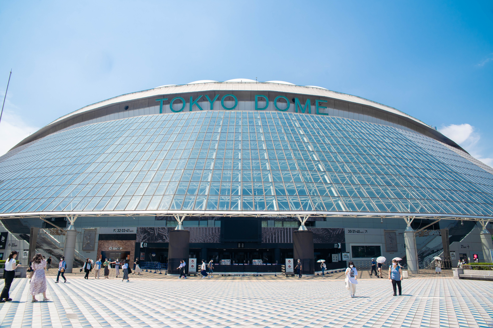

日本 - 行程攻略詳情
以演唱會場館為中心的完整旅遊指南
主要演唱會場館

東京巨蛋（東京ドーム）
📍 東京都文京區後樂 1-3-61
交通方式
- 地鐵：JR 中央線・總武線「水道橋站」、都營三田線「水道橋站」、東京 Metro 丸之內線・南北線「後樂園站」
- 步行：從各站步行約 5-10 分鐘
- 計程車：從新宿約 20-30 分鐘，費用約 2,000-3,000 日圓
周邊推薦餐廳
東京ドームシティ レストラン街
場館內有多家餐廳，日式、西式、中式料理選擇豐富
後樂園站周邊居酒屋
演唱會前後可在周邊居酒屋用餐，體驗日本居酒屋文化

橫濱競技場（横浜スタジアム）
📍 神奈川縣橫濱市中區橫濱公園
交通方式
- 地鐵：JR 根岸線「關內站」、橫濱市營地鐵「關內站」
- 步行：從關內站步行約 10 分鐘
- 接駁車：演唱會當天通常有免費接駁車
周邊推薦餐廳
中華街
距離場館不遠，可品嚐道地中華料理
關內站周邊餐廳
各種日式料理選擇，價格合理
三天兩日推薦行程
Day 1
抵達東京 + 渋谷購物
09:00
抵達成田/羽田機場
成田快線或京急線前往市區，約 1 小時
12:00
飯店 Check-in
建議選擇新宿、渋谷或池袋附近，交通便利
14:00
渋谷逛街購物
購買 IC 卡、專輯、周邊商品，體驗渋谷文化
18:00
晚餐：渋谷居酒屋
體驗日本居酒屋文化，品嚐日式料理
Day 2
演唱會日
10:00
新宿探索
逛逛新宿周邊商品店，體驗東京都會文化
14:00
前往演唱會場館
提前抵達，熟悉場館周邊環境，購買應援物
16:00
場館周邊用餐
在場館附近餐廳用餐，避免演唱會後人潮
19:00
演唱會
享受精彩的演唱會！
Day 3
觀光 + 返程
10:00
淺草寺 / 東京晴空塔
體驗日本傳統文化，拍照留念
13:00
午餐：淺草傳統日式料理
品嚐道地日式定食或拉麵
15:00
最後採買
補買伴手禮和紀念品
17:00
前往機場
預留充足時間辦理登機手續